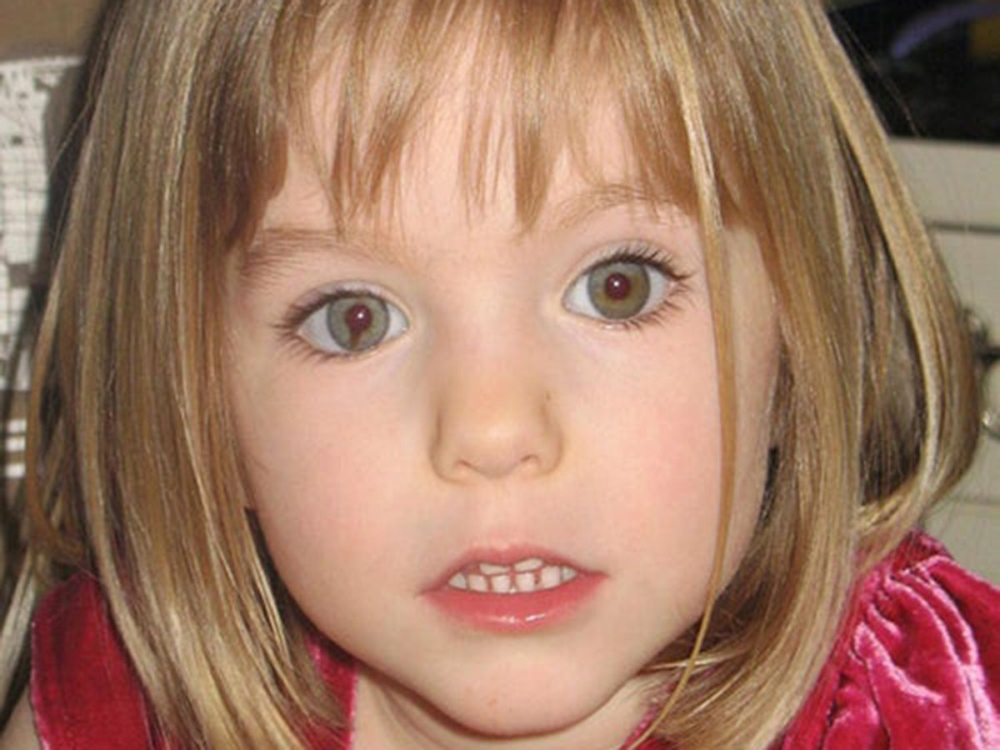

<DOCTYPE html>

  <head>
    <meta charset="utf-8">
    <title> Fania Deusto </title>
  </head>

<p></img><p>

<style>


/*Colocamos una imagen de fondo al 'body' de nuestras páginas*/

body {  
  
  background-color: #777; 
}


/*Creamos la clase 'center' de forma que podamos centrar, por ejemplo, las tablas de nuestras páginas*/

.center{

	margin-left: auto;
	margin-right: auto;
}


/*Le damos formato a los encabezados H1*/
h1 {
  font-weight: bold;
  text-align: center;  
  font-family: Monaco, "Bitstream Vera Sans Mono", "Lucida Console", Terminal, monospace;
  color: #fff;
  
}

h2 {

  font-weight: bold;
  text-align: left;  
  font-family: Monaco, "Bitstream Vera Sans Mono", "Lucida Console", Terminal, monospace;
  color: white	;

}

p, ul {

  font-family: Verdana, Helvetica, sans-serif;
  color: #fff;
  font-size: 16px; 

}


/*Le damos formato a los pies de imagen*/
figcaption {

  text-align: center;
}


/*Le damos formato a las imágenes*/
img {
  
  display: block;
  width: 50px;
  height: 50px;
  width: 100%;

}

</style>

</style>

<table border = '10' class= 'center' >  

<tr>
	<td><a href = 'html/alcasser.html'> <figcaption> Alcasser </figcaptaion></a></td>
                
	
           
        <td><a href = 'html/casa.html'> <figcaptaion> Casa</figcaptation></a></td>
	
 	<td><a href = 'html/maddeleine.html'>  <figacaptation> Maddeleine</figcaptation></a></td>
	
</tr>

<tr> 
	 <td><a href = 'html/mariluz.html'> <figcatation> Mariluz</figcaptation></a></td>

	 <td><a href = 'html/martadelcastillo.html'> <figcaptation> Martadelcastillo</figcaptation></a></td>
	
       	 <td><a href = 'html/pogo.html'> <figcaptation> Pogo</figcaptation></a></td>
               
</tr>
</html>	
<h1> Fania Deusto <h1>
<body>
<h2> Una chica muere degollada en una discoteca de Deusto, Tenía 25 años, había nacido en un país
sudamericano y le gustaban los ritmos latinos. Eran la cuatro de la madrugada de ayer, mientras estaba sentada junto a la barra de la
discoteca Fania, en Deusto, se armó una trifulca en el local. Ella no tenía nada que ver, pero fue
herida de muerte en el cuello: degollada. Todo fue rápido. Poco después, la Ertzaintza detuvo a dos individuos de 19 y 22 años. Al más joven, le acusa de la autoría del homicidio.
La discoteca está ubicada en la calle Lehendakari Agirre de Bilbao y es elegida todos los fines de semana por jóvenes de origen latinoamericano, que se reúnen para bailar y escuchar con nostalgia la música de sus países. Hacia las 4.00 h del domingo, el joven de 19 años mantuvo una discusión con una de las camareras del local. Así que fue expulsado por un vigilante.
Pero volvió al cabo de unos minutos en compañía de otro chaval, de 22 años, para agredir a quien había ayudado al vigilante a desalojarle, según informo la Ertzaintza. Entonces, estalló la bronca y el más joven cortó a la víctima el cuello con una botella rota o un arma, según investiga la Policía vasca </h2>
